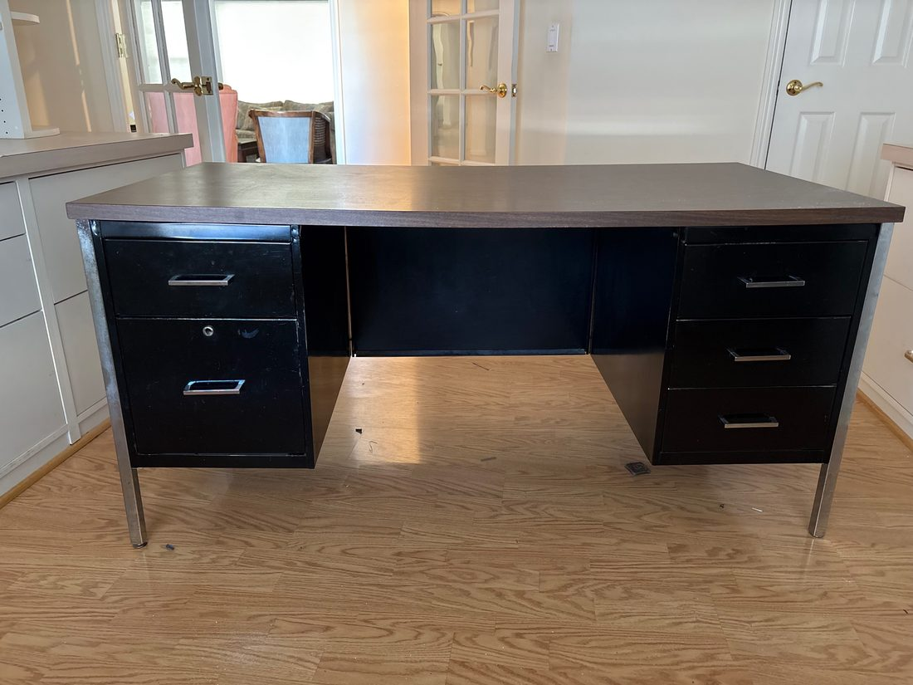

🚨 Need to Know — the Safety Wire
No alert is in effect for the Lenwood point, Santa Clara County, or the Bay Shoreline at midday press time. At the midday check the NWS active-alerts feeds for the Lenwood point (37.20893, −121.85216), for Santa Clara County (CAC085), and for the Bay Shoreline (CAZ508) all returned no watches, warnings, or advisories (feeds updated 12:25 PM PT). This afternoon’s light rain is forecast weather, not an alert — see Weather Events. No flood notice from Valley Water was found at the midday check. Sources: NWS — active alerts for the Lenwood point · NWS — active alerts for Santa Clara County
No banner-grade valley freeway closure was verified at the midday check. No major incident or full closure was verified on 87, 101, 280, 680, 880, or 85 in the valley at press time. Source: CHP — Golden Gate communications center incidents
Transit today: BART regular service resumes; VTA’s standing South San Jose closure continues. BART’s weekend Green Line cancellation and the 24th St. Mission–Daly City bus bridge ended Sunday night, with regular service resuming Monday at 5:00 AM. VTA’s standing temporary bus stop closure at Santa Teresa & Camino Verde for Routes 27, 66, 68 & 102 remains listed until further notice. Yesterday’s one-day 2nd & San Salvador closure for Routes 66 & 68 ended at 11:59 PM Sunday night. Sources: BART weekend closure Nov 14–15 — regular service resumes Monday 5:00 AM · VTA — Route 66 service alerts
Roads may still be damp, with a chance of light rain until 4:00 PM. The chance has eased to 50% with less than a tenth of an inch expected; no alert backs it. The bigger wet spell is Tuesday night through Wednesday — see Weather Events.
🌦️ Weather Events — the sky as news
The Sunday system is finishing early, tonight is partly cloudy — and Tuesday night–Wednesday has grown into the week’s main rain event. This afternoon (updated midday): a chance of light rain between 1:00 and 4:00 PM (50%, down from 90% this morning), mostly sunny, high near 60°F falling to around 52°F, northwest wind 3 to 7 mph, less than a tenth of an inch. Tonight: partly cloudy, low near 43°F, with a 20% chance of precipitation — cloudier than the morning’s mostly-clear call for the Leonid peak, so check the sky after midnight when Leo is up. Tuesday: sunny near 58°F, then rain returns Tuesday night after 10:00 PM (100%, 1 to 2 inches possible — up from a half to three-quarters this morning, gusts to 25 mph). Wednesday is the main event: rain (100%), cloudy, high near 56°F, gusts to 28 mph, with another 1 to 2 inches possible, easing Wednesday night to rain then showers and thunderstorms with a further three-quarters to an inch possible. Thursday stays unsettled with showers and thunderstorms near 54°F, Friday turns sunny near 56°F, and Saturday brings light rain likely (72%) near 55°F. The Tuesday-night and Wednesday totals are the numbers to watch in tomorrow’s editions.
Today in the Valley — Monday, November 16
Still ahead this afternoon and evening — the library Monday runs on. The San José Public Library’s remaining Monday slate: the Gratitude Tree continues at Vineland all day and at West Valley 1:00–7:00 PM; Reading to Children with Aysha at Cambrian 3:00–4:00 PM; Village Square Homework Club 3:30–5:00 PM; Make It Mondays: Scarecrows at Seven Trees, STEM Club: Soil Layers and Worm Study at King Library, and Chess Club for Kids at Willow Glen, all 4:00–5:00 PM; Crochet Club 4:30–6:00 PM; Cambrian Pokemon Club 5:00–6:00 PM and Alum Rock 3D Printing Club 5:00–6:00 PM; and the Ricky Roo & Friends Puppet Show at Seven Trees 5:30–6:30 PM, free with limited capacity, taking the place of the regular Monday storytime, alongside Family Storytime + Stay & Play 5:30–6:30 PM. Source: San José Public Library — events, Nov 16
The children’s museums are dark today — it is their Monday. Children’s Discovery Museum and The Tech Interactive are both closed on Mondays on their regular schedules and reopen Tuesday. On a rainy morning, the library slate above is the family plan. Sources: Children’s Discovery Museum of San Jose · The Tech Interactive (closed Mondays)
Last night at SAP Center — the Sharks beat Nashville 4–2 and snapped a seven-game streak. San Jose never trailed on Sunday night: Will Smith and Collin Graf made it 2–0 in the first, Ivar Stenberg added the game-winner in the second, and Macklin Celebrini closed it in the third. Smith and Celebrini each finished with a goal and two assists, and Alex Nedeljkovic stopped 32 of 34 shots. The win moves the Sharks to 10–11–2; Nashville’s seven-game winning streak is over. The Sharks are dark tonight and host Calgary on Tuesday at 7:00 PM. Sources: NBC Sports Bay Area — roommate chemistry fuels Sharks’ 4–2 win vs. Predators · NHL.com — Predators’ win streak concludes in San Jose, 4–2
Tonight — the Leonid peak, under a partly cloudy sky. The chance of light rain ends by 4:00 PM and tonight is partly cloudy, low near 43°F — cloudier than this morning’s outlook, so viewing will depend on gaps in the cloud. The Leonids peak tonight, Nov 16–17; the Moon sets before the radiant climbs, so the hours after midnight remain the window. See the Star Chart in the sidebar.
The Week Ahead
Today, Mon Nov 16 — a chance of light rain to 4:00 PM, then a partly cloudy Leonid night. Chance of light rain (50%) before 4:00 PM, high near 60°F falling to around 52°F, then partly cloudy near 43°F tonight for the Leonid peak (Nov 16–17). BART regular service resumed at 5:00 AM. Full SJPL Monday slate still ahead this afternoon; the children’s museums are dark. See Today in the Valley and the Star Chart.
Tue Nov 17 — sunny, first quarter moon, and a downtown double-header. Sunny near 58°F by day; rain returns Tuesday night (100%, 1 to 2 inches possible). First quarter moon is Nov 17. The Sharks host Calgary at SAP Center at 7:00 PM, and The Who’s Tommy opens at the San Jose Center for the Performing Arts at 7:30 PM, running Nov 17–22. Sources: SAP Center — Sharks vs. Calgary, Tue Nov 17, 7:00 PM · BroadwayWorld — The Who’s Tommy, San Jose Center for the Performing Arts, Nov 17–22
Wed Nov 18 — the week’s main rain: 100%, with 1 to 2 inches possible, on top of Tuesday night’s 1 to 2. Rain all day, high near 56°F, gusts to 28 mph, easing at night to rain then showers and thunderstorms with a further three-quarters to an inch possible. Three Days Grace plays SAP Center at 7:00 PM, and the Morgan Hill Car Meet runs at 7:30 PM — both sit in the wet forecast, so check before heading out. Source: National Weather Service — forecast for the Lenwood point
Thu Nov 19 — showers and thunderstorms, near 54°F. Unsettled through the day, with a chance of rain into the evening before a partial clearing Thursday night, low near 42°F.
Fri–Sun, Nov 20–22 — a sunny Friday, then rain likely Saturday. Friday is sunny near 56°F — the dry pick of the late week. Saturday brings light rain likely (72%) near 55°F and Sunday a chance of rain (51%), which puts a forecast watch on the weekend car meets (see Car Shows). Tommy runs at the Center for the Performing Arts through Sunday Nov 22, and the Sharks host Seattle at SAP Center on Saturday Nov 21 at 7:00 PM.
🏁 Car Shows — the Bay Area circuit
Sat Nov 21 — San Jose Cars · California’s Finest Detail Supply, 1847 Little Orchard Street, San Jose · 8:00–11:00 AM, monthly. Cars, trucks, motorcycles and custom rides welcome, with coffee and a casual morning gathering. Forecast watch: Saturday is currently rain likely in the NWS outlook — check the listing before heading out.
Worth the drive — Sat Nov 21: Cars and Coffee at Laguna Seca · WeatherTech Raceway Laguna Seca, Salinas · Saturday morning per the calendar listing. A circuit-side cars & coffee — verify the morning’s hours against the listing before the drive south.
Sun Nov 22 — Golden Gate Region Porsche Club Cars & Coffee · Ariana Auto Body, 8145 Enterprise Drive, Newark · 10:00 AM – noon. A club gathering — contact the club for participation details before attending.
Wed Nov 18 (and Wed Nov 25) — Morgan Hill Car Meet · Morgan Hill · 7:30 PM. South County’s standing Wednesday meet-up — the closest South Bay meet on the calendar. This Wednesday’s forecast is the week’s heaviest rain (100%, 1 to 2 inches possible), so check the listing before heading out.
Sun Dec 13 — Cars & Croissants on The Row · Santana Row, San Jose · 9:00 AM – noon. 100|OCT’s premier exotic gathering runs on Sundays in its 2026 season — the next (and last of the year) is Dec 13. Free to attend; displaying an exotic requires a reserved spot.
Sat Nov 21 — San Rafael Cars & Coffee, Marin County Civic Center, 3530 Civic Center Drive, 8:00–10:00 AM, monthly, listed rain or shine — check with the organizer for rain changes.
Sun Nov 22 (4th Sundays) — Penngrove Cars & Coffee, Main Street, Penngrove, 8:00–10:00 AM.
Every Friday — Santa Rosa cruise-in at Machado’s Burgers, Larkfield Center, 4:00–7:00 PM — the next editions are Fri Nov 20 and Fri Nov 27.
The Community Wire
No new pertinent post from an official or public Facebook page was verified at midday press time — the wire is honest when it is empty. Summaries here are always in our own words, attributed, and linked to the original. No private groups unless the publisher names them.
🎁 Free Stuff
FREE — vintage steel tanker desk. A classic mid-century tanker, built like its name: a heavy steel double pedestal with five drawers — a shallow drawer over a deep locking file drawer on the left, three drawers on the right — chrome pulls and legs, and a dark woodgrain laminate top. It measures 60″ long × 30″ deep × 30″ high. Used and solid; the top is dusty with light scuffs from storage, and the items sitting on it in the office photo aren’t included. Fair warning: it’s heavy — bring help and a dolly.



First confirmed pickup takes it. Pickup at 18231 Llagas Creek Dr, Morgan Hill — arrange a time through the Facebook Marketplace listing. Running at the publisher’s direction; the same desk is also offered in our sister papers.